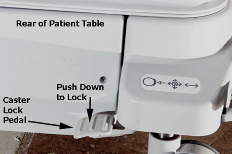
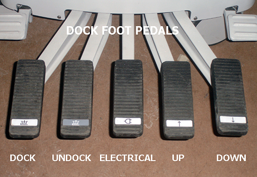
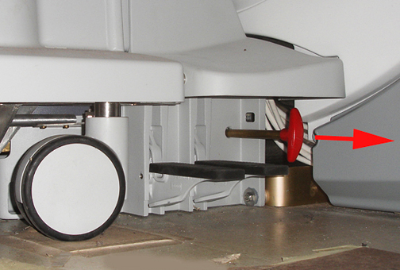
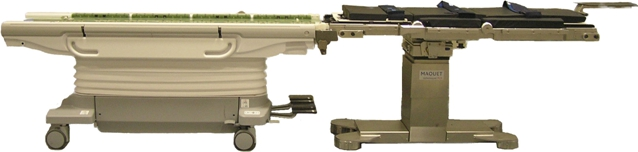
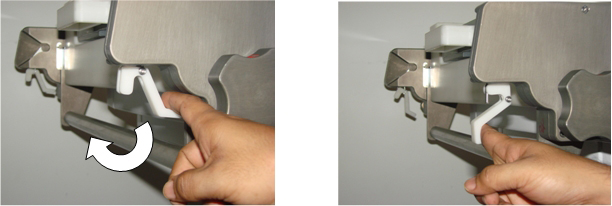

Operating Documentation
Direction 5670006, Rev# 1
Discovery MR750w GEM Service Methods
Module Version 5.0, Version Date 10/18/11
Operating Documentation |
| Required Persons | Preliminary Reqs | Procedure | Finalization |
|---|---|---|---|
| 1 | Not Applicable | 20 minutes for standard table, 40 minutes for OR-compatible table | Not Applicable |
The patient table may be operated in either the docked or undocked position. Undocked, it may be raised or lowered via the foot pedals located at the rear of the table. In addition, floor locks are available for locking the wheels during patient transfer. While the patient table is docked to the magnet enclosure, the table may be driven up or down by either the dock pedals or the foot pedals at the rear of the table.
Undock patient table by pressing second pedal from left at rear of table.
Press the Table Down pedal (far right) to initiate downward movement of the table top. Downward movement of table top should stop when pedal is released. Verify that table travels from highest to lowest position in no more than 15 seconds with table unloaded.
Pump the Table Up pedal (second from right) to initiate upward movement of table. Verify that the table reaches its highest position in 15 pedal strokes or fewer. For accurate check of this function to specification given, pedal strokes must be complete (i.e. push pedal all the way down and let pedal come all the way up before starting next downward movement).
Press the Caster Lock pedal on one of the rear casters to lock both rear casters. See Illustration 1.
Illustration 1: Engaging the Caster Lock Pedal

Verify caster locks inhibit all Patient Table movement when pedal is in locked position.
Verify there is no movement of cradle while Patient Table is undocked.
Dock Patient Table by aligning table with dock and then pressing the far left dock pedal (see Illustration 2). Successful docking should not require excessive force. If table is fully up when docked, verify that carriage advances forward until it connects with cradle latch immediately after docking.
Illustration 2: Dock Pedal on Patient Table

Verify that the emergency release lever (located on the right side of the dock) releases the Patient Table from the dock when it is pulled (make sure LPCA has been disengaged from cradle). See Illustration 3.
Illustration 3: Dock Emergency Release Handle

Redock the patient table.
Verify that when you turn the cradle release handle at the rear of the cradle, it disengages cradle from LPCA. Refer to procedure for Cradle Release Adjustments (Cradle Release Block Adjustment, Cradle Release From Carriage Adjustment, or Cradle Release from Patient Table).
With the cradle fully in the bore, verify that the Table Down pedals on both the dock and table itself do not allow the table to go down. If the table does move down, perform Cradle Home Table Down Interlock Adjustment.
| ||||
| The following steps are for the OR-Compatible Table only. | ||||
Move the cradle to the home position. Verify that the Table Down pedals on both the dock and table itself do not allow the table to go down. If the table does move down, refer to Troubleshooting (Table Down Inhibit Mechanism) in this manual.
| ||||
| The following steps will be performed in the Surgical Suite Operating Room. Make sure to follow the site’s established procedures for working in a sterile environment. | ||||
Undock the OR-Compatible table from the scanner and move it into the adjacent operating room.
Verify the OR-Compatible Table is set to its maximum height by activating the Table UP Pedal.
Verify the Maquet Surgical Table is set to the patient transfer position.
Move the OR-Compatible Table to the end of the Maquet Surgical Table and dock the two tables together.
Illustration 4: OR-Compatible Table Docked to Maquet Surgical Table

Verify the tables are interlocked by pulling back on the OR-Compatible Table and seeing if the tables will separate.
If the tables separate then adjustments to the engagement alignment of the OR-Compatible Table Dock need to be made. Refer to the “Replacement Dock Assembly Installation” section of Surgical Table Dock Replacement for alignment instructions. Proceed to Step 17 once the two tables are successfully docked.
If the tables are interlocked then rotate the undock knob clockwise on the side of the OR-Compatible Table and pull back on the table to release and separate the two tables.
Re-dock the two tables and verify they are interlocked.
Go to the one side of the OR-Compatible Table and push the Emergency Release Lever down to lock it in place.
Illustration 5: Emergency Release Lever

Perform the same step on the other side.
Verify the two tables are undocked and will separate.
Remove the OR-Compatible Table from the Operator Room, reset both emergency latches to the normal position and return it to its storage location.
No finalization steps.